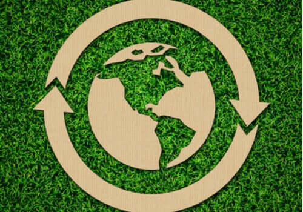

ECONOMIA CIRCULAR: COMO APLICAR NO SEU NEGÓCIO
A economia circular é uma alternativa ao modelo tradicional linear de produção e consumo. Em vez de extrair, produzir, consumir e descartar, a economia circular propõe o reaproveitamento contínuo dos recursos.
No ambiente empresarial, isso pode ser feito por meio de ações como redesign de produtos para facilitar a desmontagem e reciclagem, escolha de matérias-primas sustentáveis, reutilização de resíduos e parcerias com cooperativas de reciclagem. Além de reduzir impactos ambientais, essas práticas trazem inovação e vantagem competitiva.
Incorporar a economia circular no seu negócio contribui para um futuro mais sustentável, fortalece a imagem da marca e abre novas oportunidades de mercado.
Fonte: SEBRAE
SUSTENTABILIDADE NA CADEIA DE SUPRIMENTOS
A sustentabilidade na cadeia de suprimentos busca garantir que todos os elos da produção e distribuição sejam socialmente responsáveis e ambientalmente corretos. Isso envolve desde a seleção ética de fornecedores até a logística de distribuição com menor emissão de carbono.
As empresas devem adotar tecnologias como rastreamento de materiais, análise de dados e automação para tornar a cadeia mais eficiente e transparente. Ao integrar sustentabilidade, as organizações também reduzem riscos operacionais e ganham a confiança do consumidor moderno.
A pressão por práticas ESG está cada vez maior, e investir em uma cadeia de suprimentos sustentável não é mais um diferencial, mas uma exigência do mercado.
Fonte: SAP Brasil
TECNOLOGIAS VERDES E INOVAÇÕES SUSTENTÁVEIS

As tecnologias verdes são soluções desenvolvidas para reduzir os impactos ambientais, promovendo um desenvolvimento mais equilibrado. Incluem fontes de energia limpa como solar e eólica, sistemas de reutilização de água, construções sustentáveis e agricultura de baixo carbono.
Empresas inovadoras utilizam essas tecnologias para atender às novas demandas sociais e às legislações ambientais. Além disso, ajudam a reduzir custos operacionais a longo prazo e atraem investidores conscientes.
Investir em inovação sustentável é investir em longevidade empresarial, garantindo que o crescimento econômico caminhe lado a lado com a preservação ambiental.